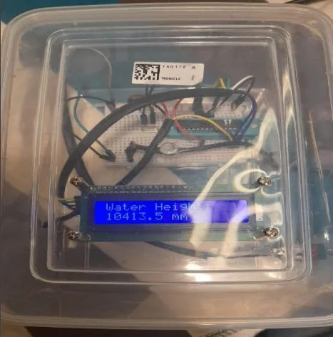
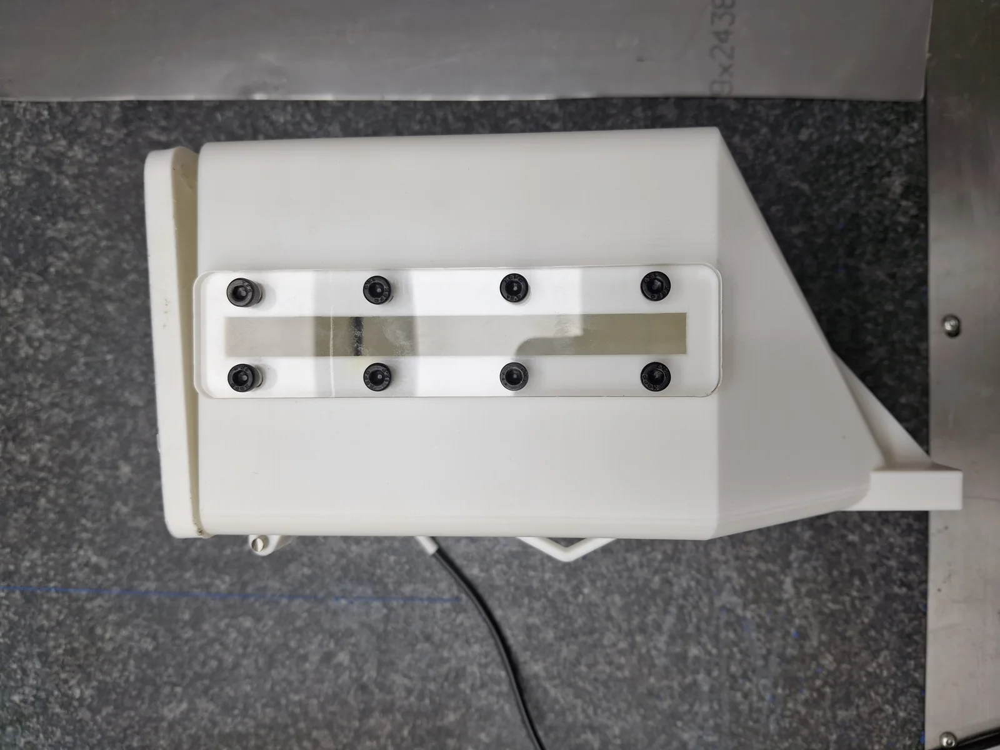

Projects · Engineering Case Studies
Work connecting design to functioning hardware.
Each case study explores the engineering challenge, subsystem architecture, custom PCB layouts, SolidWorks mechanical assemblies, firmware integration, and practical physical verification.

ToF SLAM Mobile Robot
Autonomous mapping differential-drive platform combining custom SolidWorks chassis plates, stepper-driven VL53L8CX multizone scanning, ESP32 dual-core control, and MATLAB occupancy mapping.

Sense-Oil LevelGuard
Non-invasive retrofit oil-level monitoring for industrial sewing machines using MS5837 hydrostatic pressure measurement, ATmega328P custom PCB, and dynamic operator status alerts.

Modified Industrial Iron Workstation
Automated pneumatic pre-heating workstation with guided multi-link kinematics, digital temperature PID controllers, safety circuits, and full 23-item SolidWorks production BOM.

FLOD Glue-Pellet Hopper
Parametric replacement hopper reverse-engineered for a Flat Line On Demand machine, incorporating design configurations, transparent level inspection, and a motorized anti-bridging agitator.
Additional Industrial Exposure
Hands-on factory floor commissioning & manufacturing automation.
During my industrial training at MAS Capital (Intimates Division), I contributed beyond single standalone projects. My rotation included ultrasonic die and mould tooling, 3D cup-bonding trials, machine installation and commissioning, PLC ladder logic exercises, control cabinet wiring, optical sensor alignment, and live production troubleshooting.
These supporting responsibilities strengthened my understanding of real-world manufacturing constraints, industrial safety standards, and the value of clear documentation when collaborating with technicians and senior engineers.